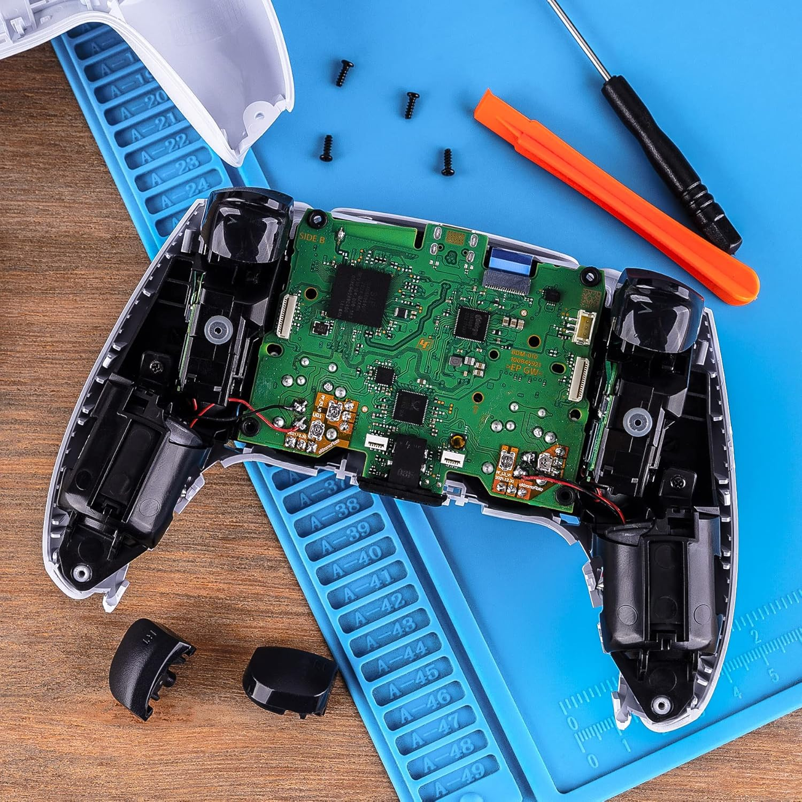
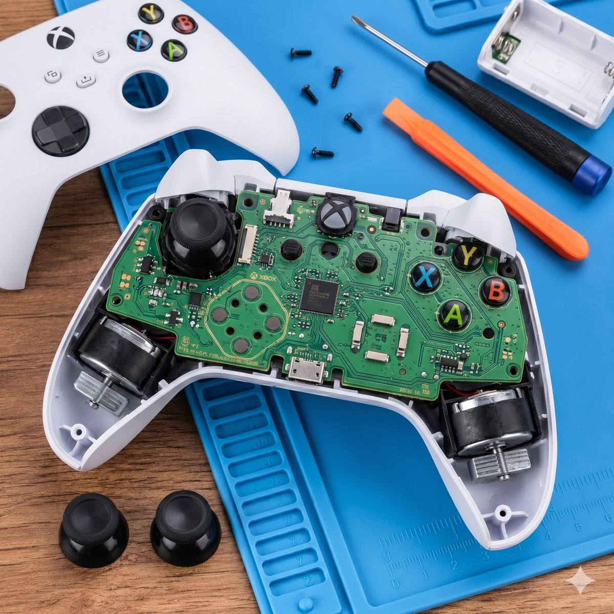

Tek Atölye. Dokuz Uzmanlık.
DualSense'in en küçük vidasından PS5 anakartına kadar her şeyi içerden tanıyoruz. Detaylı servis kategorilerimizi incele — sorunun olduğu kategoriye bir tık uzaktasın.
DualSense'in en küçük vidasından PS5 anakartına kadar her şeyi içerden tanıyoruz. Detaylı servis kategorilerimizi incele — sorunun olduğu kategoriye bir tık uzaktasın.
Joystick'in karaktersiz hareketine kesin son. Modül değişimi, kontak temizliği ve hassas kalibrasyon ile drift problemi tamamen sıfırlanır. Standart veya manyetik upgrade — bütçene göre çözüm.
Tanı Ücretsiz
Manyetik alan teknolojisi ile fiziksel temas sıfır, aşınma sıfır. Drift sorununa kalıcı son. GuliKit dahil flagship modüller stoğumuzda — pro turnuva seviyesinde performans.
Premium Upgrade
Orijinal analog değişimi, kalibrasyon hatası, ölü bölge sorunu, sıkışma — hepsine tek elden çözüm. Mikroskop altında profesyonel müdahale, 60 dakikada teslim.
Aynı Gün
Adaptif tetik mekanizmasında yay kopması, kademeli sertleşme veya basınca tepkisizlik sorunları. Mekanizma değişimi ve geri bildirim motorunun hassas ayarı ile orijinal his geri gelir.
Mekanizma Yenileme
Hızlı boşalan veya şarj tutmayan kolun bataryası yüksek kapasiteli orijinal muadil ile değiştirilir. Kalibrasyon sonrası şarj süresi fabrika ayarına döner — saatlerce kesintisiz oyun.
Yüksek Kapasite
Toza veya zorlanmış kabloya bağlı bozulan USB-C portu mikroskop altında mikro lehim ile yenilenir. Şarj olmuyor, oynat'ken bağlantı kesiyor — tamamen ortadan kalkar.
Mikro Lehim
Sıvı teması, kısa devre, yanmış komponent veya bağlantı kopukluğu durumunda BGA seviyesi profesyonel anakart tamiri. Çoğu durumda yeni kol almaktan %50-70 ekonomik.
Uzman İşçilik.jpg)
Su, çay, kola döküldüğünde her dakika kritik. Ultrasonik temizlik ve oksidasyon önleyici işlem ile kurtarma operasyonu. Erken müdahale → tam çalışan kol. Sıvı temasında vakit kaybetme, hemen yaz.
Acil MüdahaleAdaptif haptic motor arızası, titreşim sesi veya tepkisizliği için motor değişimi ve hassas kalibrasyon. PS5'in immersive geri bildirim deneyimini ilk günkü gibi geri kazan.
Hassas AyarDualSense'in en küçük vidasından PS5 anakartına, Xbox tetiğinden DualShock analoğuna kadar — bu rehberde en sık karşılaşılan arızaları, gerçek nedenlerini ve KonsolTech atölyesinde nasıl kalıcı çözüldüğünü anlattık. Sorununu aşağıdan bul; çözümü bir tık uzakta.
Drift; sen kola dokunmazken karakterin ya da imlecin kendiliğinden hareket etmesidir. Genelde tek yöne sürüklenme, nişan alırken kayma veya menülerde otomatik gezinme olarak fark edilir.
Klasik DualSense analoglarında potansiyometre denen temaslı bir parça vardır. Zamanla bu yüzey aşınır, içine toz/karbon dolar ve sensör "sıfır" noktasını şaşırır. Yani drift çoğu zaman kullanıcı hatası değil, parçanın doğal ömrüdür.
Basınçlı hava, izopropil alkol veya kalibrasyon menüsü kısa süre rahatlatabilir; ama temas yüzeyi aşındıysa sorun hızla geri döner. Kalıcı çözüm modül değişiminden geçer.
Drift'i bir daha görmemek istiyorsan, temaslı analog yerine temassız Hall Effect veya TMR modülüne geçmek en mantıklı yatırımdır. Aşınacak fiziksel temas olmadığı için drift kaynağı tamamen ortadan kalkar.
Standart analog değişimi ve kalibrasyon çoğu durumda aynı gün, sıklıkla 60 dakika içinde tamamlanır. Tanı tamamen ücretsizdir; onayın olmadan tek vida bile sökülmez.
Hall Effect, joystick konumunu manyetik alanla ölçen temassız bir teknolojidir. Fiziksel sürtünme olmadığı için aşınma — dolayısıyla drift — pratikte ortadan kalkar.
TMR (Tunnel Magnetoresistance), Hall Effect'in bir adım ötesi yeni nesil manyetik sensördür. Daha düşük güç tüketimi, daha hassas okuma ve düşük gecikme sunar — rekabetçi oyuncular için idealdir.
GuliKit, manyetik sensörde dünya çapında tanınan bir markadır. Flagship paketimizde orijinal GuliKit TMR modülü kullanılır ve 12 aya kadar garanti verilir.
Bütçe odaklıysan orijinal analog; "bir daha drift istemiyorum" diyorsan Hall Effect; e-spor seviyesi tepkime ve dayanım istiyorsan TMR ya da GuliKit doğru tercihtir. Oyun tarzını söyle, 2 dakikada yönlendirelim.
Evet — drift seyrekse veya maliyeti minimumda tutmak istiyorsan orijinal analog hızlı ve ekonomik bir çözümdür. Tek farkı, temaslı yapısı nedeniyle uzun vadede yeniden aşınabilmesidir.
DualSense'in R2/L2 tetikleri, oyuna göre direnç veren "adaptive trigger" mekanizmasına sahiptir. İçindeki küçük dişli ve motor sistemi zorlanınca his bozulur.
Tetik bastıkça gevşiyor, takılıyor ya da eski "klik" hissini vermiyorsa; yay ve mekanizma değişimiyle orijinal tepkime geri kazanılır.
X, kare, üçgen veya yön tuşları basınca takılıyor ya da bazen algılamıyorsa, genelde silikon ped veya temas yüzeyi sorunludur. Temizlik veya parça değişimiyle çözülür.
Touchpad tıklamıyor; PS, Create/Share veya Options tuşları çalışmıyorsa, kart üzerindeki ilgili buton ya da flex kablo onarılır veya değiştirilir.
Lityum bataryalar zamanla kapasite kaybeder; 2-3 yıl sonra şarj süresi belirgin kısalır. Bu normaldir ve batarya değişimiyle çözülür.
Şarj tutmayan kolun bataryası yüksek kapasiteli orijinal muadille değiştirilir, kalibre edilir ve şarj süresi fabrika seviyesine döner.
Toz, zorlanmış kablo veya darbe USB-C portunu bozabilir. Soket mikroskop altında mikro lehimle yenilenir — "şarj olmuyor" veya "oynarken bağlantı kesiliyor" sorunu biter.
Sorun bazen bataryada, bazen sokette, bazen de anakarttaki şarj devresindedir. Ücretsiz tanıda gerçek kaynağı net olarak belirleriz.
TV'ye görüntü gitmiyor, sinyal yok veya ekran karlanıyorsa çoğu zaman HDMI portu ya da HDMI IC'si sorunludur. Mikro lehimle onarılır.
Konsol gürültülü çalışıyor, ısınıyor veya kapanıyorsa içeride toz birikmiş olabilir. Detaylı iç temizlik performansı geri getirir.
Yıllar içinde kuruyan termal macun ısı transferini bozar. Güvenli ve uygun termal macun yenilemesiyle sıcaklıklar düşer, fan sesi azalır.
Disk takılıyor, çıkmıyor veya okunmuyorsa disk sürücü mekanizması ve kalibrasyonu değerlendirilir.
Konsol açılmıyor, beep sesi veriyor veya ışık yanıp sönüyorsa anakart seviyesinde tanı gerekir. Hata kaynağını adım adım tespit ederiz.
Kısa devre, sıvı teması veya yanmış komponent durumunda BGA seviyesi profesyonel anakart onarımı yapılır.

PS4 kolundaki drift ve analog sorunları da aynı mantıkla çözülür: modül değişimi ve kalibrasyon. İstersen Hall Effect upgrade DualShock 4'e de uygulanabilir.
PS4 ve PS4 Pro'da görüntü gitmemesinin en yaygın sebebi kırılmış HDMI portudur; mikro lehimle yenilenir.
"Uçak sesi" çıkaran PS4'ler genelde toz ve kurumuş termal macundan muzdariptir. İç temizlik ve macun yenileme sessizliği geri getirir.
Güç sorunları, mavi/beyaz ışık takılması gibi durumlarda güç katı ve anakart kontrol edilir.
Xbox Series ve One kollarındaki sol/sağ analog drift'i de modül değişimiyle çözülür; istersen Hall Effect upgrade uygulanır.
Tetikler tepki vermiyor, takılıyor veya sürekli basılı algılanıyorsa mekanizma ve sensör onarılır.
Sık kullanımdan kırılan veya tıklamayan bumper (LB/RB) tuşları değiştirilir.
Xbox kolunu da temassız Hall Effect modüle yükselterek drift'e kalıcı son verebilirsin.
Su, çay, kola döküldüyse her dakika kritik: hemen kullanmayı ve şarj etmeyi bırak, cihazı kapat ve kurut.
En kritik kural: Islak cihazı çalıştırma ve şarj etme — elektrik verildiğinde kısa devre ve kalıcı hasar riski katlanır. Kuru ortamda beklet, en kısa sürede atölyeye ulaştır.
Erken müdahalede ultrasonik temizlik ve oksidasyon önleyici işlemle cihaz kurtarılabilir. Geciktikçe paslanma (oksidasyon) komponentleri kalıcı bozar.
Yanmış komponent, kopuk bağlantı veya çip seviyesi sorunlar BGA istasyonu ve mikroskop altında mikro lehimle onarılır.
Çoğu durumda anakart onarımı, yeni cihaz veya yeni kol almaktan belirgin şekilde daha ekonomiktir. Tanı sonrası net rakam verir, kararı sana bırakırız.
Tüm işlemler statik elektriğe karşı korumalı (ESD) tezgahta yapılır — hassas elektronik için statik, görünmez ama gerçek bir risktir.
Kullandığımız analog modüller, bataryalar ve soketler marka onaylı/orijinal muadil kalitesindedir. Önceliğimiz "en ucuz" değil, "doğru" parçadır.
Her onarımdan sonra kol kapsamlı kalibrasyondan geçer; ölü bölge (deadzone) optimize edilir ve drift testi yapılır.
Dijital mikroskop ve BGA istasyonu sayesinde çıplak gözle görülemeyen mikro lehim işleri güvenle yapılır.
Kol veya konsol bize ulaşır, uzman teknisyen detaylı kontrol eder, net fiyat ve süre çıkar. Onaylamazsan tek vida sökülmez ve cihaz aynı şekilde geri döner.
Şehir dışındaysan anlaşmalı kargoyla sigortalı ve takipli gönderim yaparsın; hem giderken hem dönerken kayıp riski sigorta kapsamındadır.
Drift, batarya, soket gibi standart işler çoğunlukla aynı gün — sıklıkla 60 dakika içinde tamamlanır. Anakart seviyesi işler 24-48 saat sürebilir.
Yaptığımız işin arkasındayız. Garanti pakete göre değişir; GuliKit TMR pakedinde 12 aya kadar garanti sunulur. Aynı arıza tekrarlarsa ücretsiz çözeriz.
Tanı sonrası tek rakam söyleriz; sürpriz ek ücret çıkmaz. Memnuniyet odaklı çalışırız.
Drift'i kalıcı çözen Hall Effect/TMR upgrade, çoğu durumda yeni kol almaktan daha ekonomik ve daha dayanıklıdır. Konsol tarafında ise anakart onarımı genelde yeni cihazdan çok daha uygundur.
DualSense, DualSense Edge, DualShock 4, Xbox Series X|S ve Xbox One kolları; PS5, PS5 Slim ve PS4 konsolları.
Garanti, yapılan işlemi ve değişen parçayı kapsar. Detaylar teslimde belge ile verilir.
Kol tamirinde kişisel veri saklanmaz. Konsol onarımlarında hesap ve veri güvenliğin önceliklidir; gereksiz hiçbir işleme dokunulmaz.
9 hizmet kategorisi, sıfır gizli ücret, 5 dakikada cevap. WhatsApp'tan yaz, atölye seni karşılasın.
WhatsApp'tan Yaz Ara